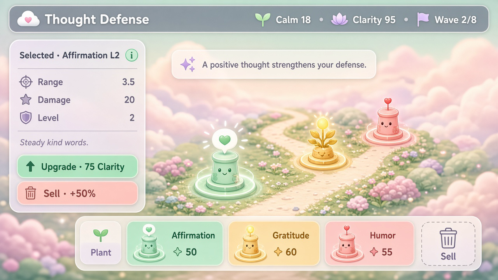
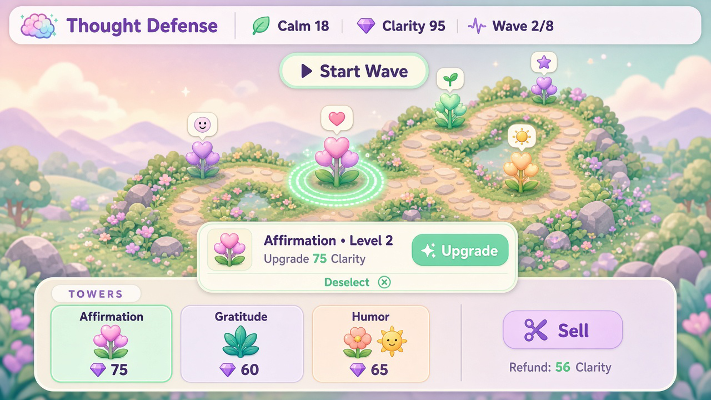
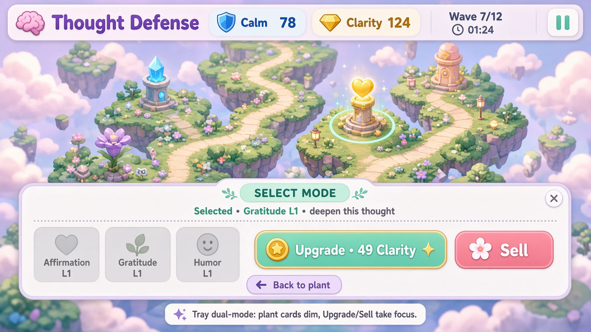

Three click-to-upgrade button concepts for Femmy’s soft pastel tower defense.
Open this file locally. Specs live in ../UI_MOCKUPS.md.
Luau not implemented until you vote.
Please reply A, B, or C (or a hybrid) in chat / email /
DESIGN_CONSULT.md. Next batch implements your pick.

A Selection panelTap a planted thought → side/bottom panel with stats, Upgrade, and Sell. Clearest inspect flow.

B Context barSelect tower → slim bar above the tray with Upgrade cost/level. Smallest HUD change.

C Tray dual-modeTray swaps to Upgrade/Sell when selected; Plant cards dim. No new floating chrome.